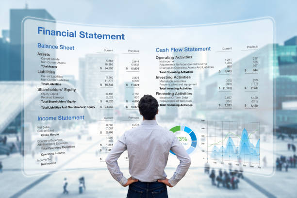

The "Marketing Insights – Food and Beverage Industry" project conducted in June 2023 centered around
the development of a robust Pizza Sales Report utilizing SQL and Power BI tools. This initiative aimed
to unravel the intricacies of the dynamic quick-service restaurant (QSR) sector,
with a specific emphasis on deciphering sales performance and conducting a comprehensive competitive analysis.
Welcome to my data-driven journey with Atliq Hardwares, where I undertook the challenge of presenting
impactful insights to the esteemed Executive Management Team. Leveraging the power of SQL queries on our extensive million-rows database,
I meticulously addressed 10 ad-hoc business requests, unraveling insights that carry the potential to revolutionize our operational landscape.

"Welcome to the realm of proactive risk management and operational enhancement.
In the 'Fraud Detection - Credit Card Complaints' project,
I spearheaded the development of dynamic and interactive Tableau dashboards to revolutionize our approach to credit card complaint data.
The mission was clear: enhance decision-making and streamline processes to mitigate risks effectively.
Welcome to my Tableau project focused on analyzing and visualizing Superstore sales data.
In this exploration, I delve into the vast dataset of the Superstore's sales transactions to uncover valuable insights and trends. Through interactive and visually engaging dashboards,
I aim to provide a comprehensive overview of the sales performance, product categories, geographical distribution, and key metrics that contribute to the Superstore's success.
"Embark on a journey into the heart of Adventure Works Cycles, a multinational manufacturing powerhouse, through
the lens of the 'Manufacturing Report'. In this project,
I delved into the intricacies of the company's operations,
leveraging the prowess of Excel, Pivot Tables, and Power Query to craft a comprehensive Manufacturing Analysis report.

Embarking on a financial odyssey, the 'Bank Analytics' project stands as a testament to my journey in
dissecting and unraveling the intricate world of loans and financial data. Armed with SQL queries and wielding the power of Excel,
I meticulously navigated through two datasets to craft a compelling dashboard that encapsulates multifaceted insights.
Welcome to the dynamic landscape of 'Sales Data Analysis,'
where I delved into the intricacies of a vast sales dataset to unearth invaluable insights that drive
informed business decision-making. Leveraging the power of Power BI,
this project showcases my proficiency in transforming raw data into actionable recommendations for optimizing sales strategies.